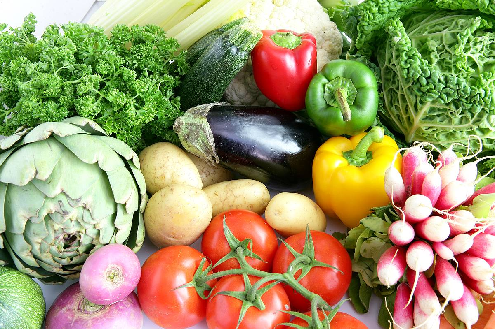
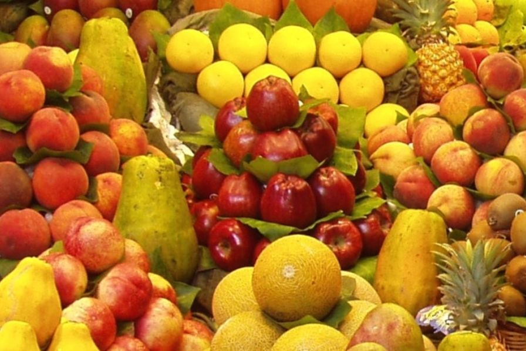

|

|
Les légumes frais proviennent de toutes les parties de la plante :
- racines (carottes, navet…),
- tubercules (pommes de terre),
- tiges (céleri branche),
- feuille (épinard),
- fleur (chou-fleur),
- fruit (tomate, courgette).
Ils se caractérisent par une teneur en eau très importante (90 % en moyenne), un apport en glucides modéré : 1 a 6 % pour les parties aériennes des plantes (salades, épinards, courgettes, tomates…) et 9 % environ pour les racines (carottes, céleri…).
Les légumes représentent un apport important de potassium.
|
On y trouve également :
- du calcium (surtout dans les choux),
- du magnésium, du fer et du cuivre (légumes a feuilles type épinard),
- du soufre (choux, oignons, ail, poireaux, navets, radis)
- et de nombreuses autres matières minérales.
Les légumes sont riches en vitamines hydrosolubles :
- vitamine C (choux, légumes a feuilles, tomates),
- provitamine A ou beta-carotène (partie colorée des plantes : légumes a feuilles vertes, carottes…)
- vitamines du groupe B.
- Les fibres des plantes se composent surtout de cellulose, d’hémicellulose et de matières pectiques.
La pomme de terre se distingue par un apport plus important en amidon (20 %) et une teneur en vitamine C assez faible surtout après quelques mois de conservation. Elle doit être assimilée aux aliments sources d’amidons (pâtes alimentaires, riz) plutôt qu’à un légume frais.
|
|

|
La composition des fruits est semblable a celle des légumes.
Leur teneur en glucides est cependant plus élevée. Il s’agit le plus souvent de sucres
(de fructose mais aussi de saccharose ou de glucose et plus rarement d’amidon (banane, châtaigne).
L’apport en sucres est très variable. Il est peu important pour les agrumes, les groseilles,
les fraises, les framboises, les mures, le melon et la pastèque (5 a 10 %).
Les fruits les plus riches en sucres sont le raisin, la banane (18 a 20 %).
Un fruit apporte généralement 15 à 20 g de glucides.
L’intérêt principal des fruits réside dans leur richesse en vitamines.
Les plus riches en vitamine C sont les fruits acides (agrumes, groseilles, cassis, fraises…),
les plus riches en carotène sont les fruits colores (abricots, pêches, myrtilles, cassis…).
Seuls, les agrumes contiennent du calcium.
|
Il y a peu d’oligo-éléments dans les fruits. Ils sont tous riches en potassium et pauvres en sodium.
Les fibres des fruits sont composées a part égale de cellulose, lignine, hémicellulose et matières
pectiques.
Certains fruits sont particulièrement riches en pectines (pomme, coing, groseille).
_Les fruits séchés (raisins, pruneaux, bananes, pommes, poires) renferment en moyenne
73 % de glucides assimilables. Si la dessiccation est bien conduite (par des procédés
industriels plutôt que grâce au soleil), ces fruits constituent une bonne source de vitamines
A et C. Ils ont une teneur élevée en fibres.
_Les fruits oléagineux (noix, noisettes, amandes, cacahuètes, noix de cajou) représentent
un apport important de lipides (plus de 50 %) et de protéines (10 a 15 %). Les noix et
les noisettes sont riches en acides gras insaturés (poly ou mono).
Les fruits oléagineux représentent par ailleurs une bonne source de minéraux (calcium,
magnésium, fer) et de fibres. Il s’agit d’aliments très énergétiques.
|